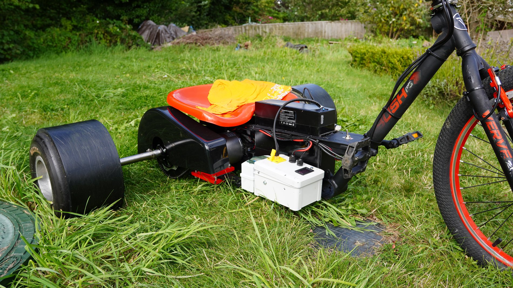
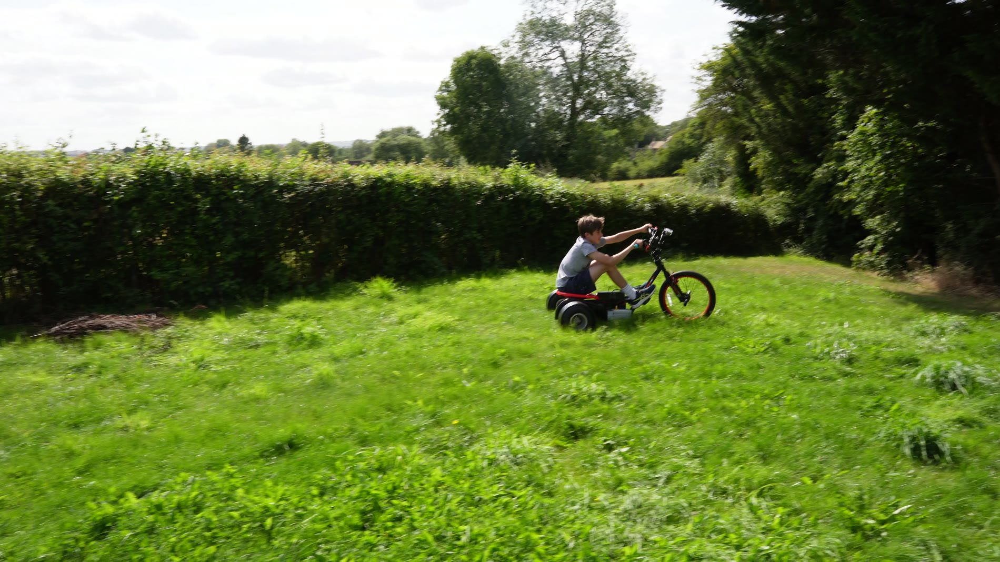
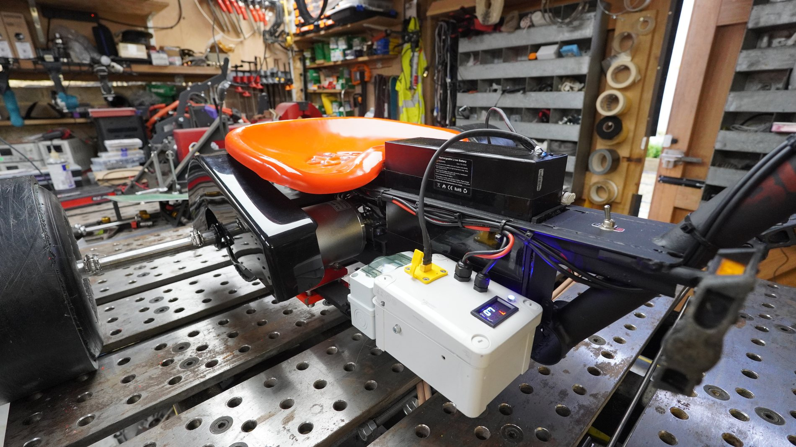
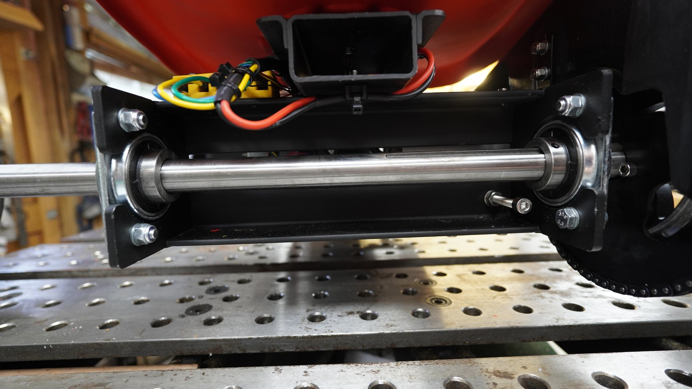
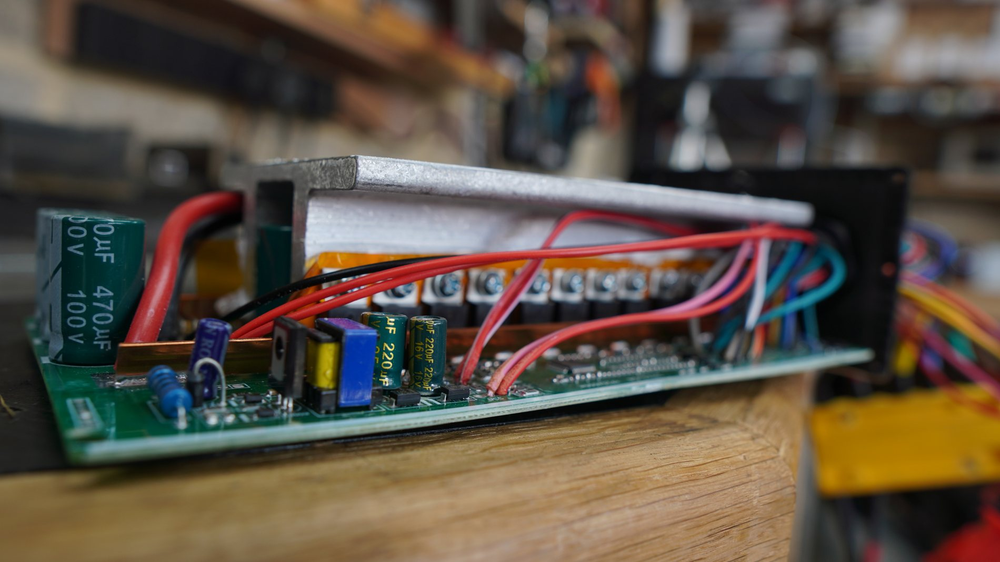
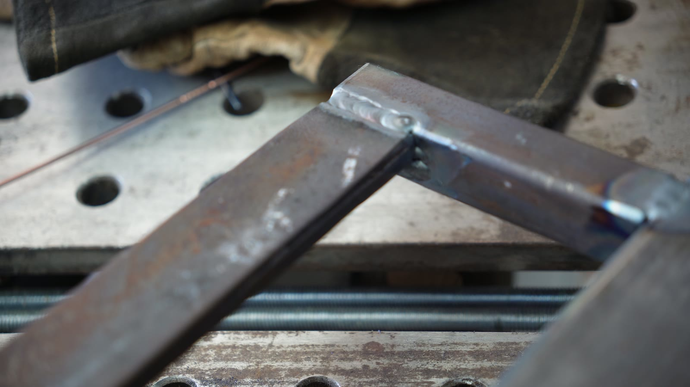
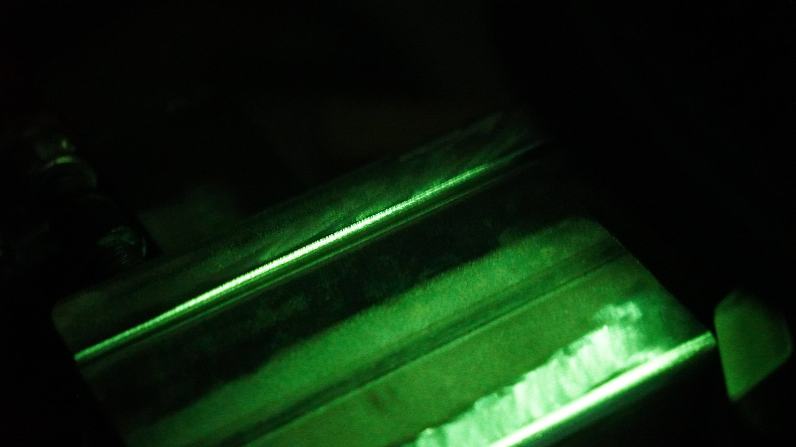
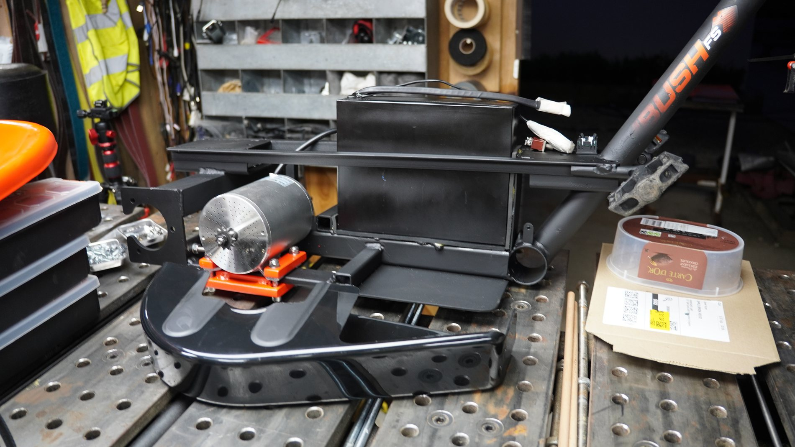
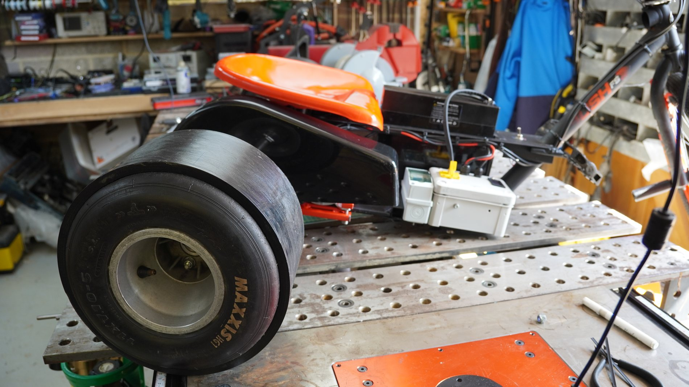
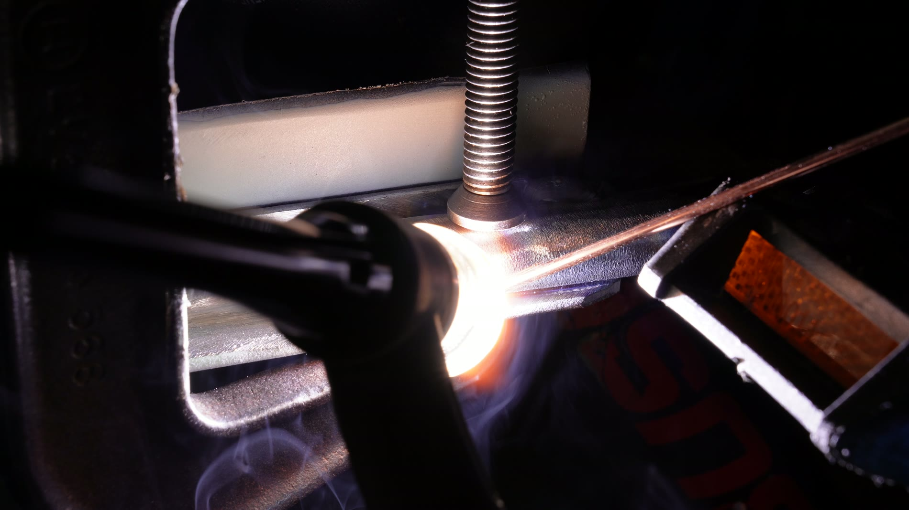

Family workshop
Vehicle / welding / electronics / controlled silliness
Drift Trike
An electric drift trike built from workshop fabrication, motor-mount problem solving, controller wiring, welding-filter footage and the extremely important requirement that it makes a child grin while going sideways.
This is exactly the kind of project I like: steel, wheels, motors, wiring, testing, noise, sparks, and a final machine that has to survive real use rather than just look plausible on the bench.

Payoff
The 30-second grin test.
This is the bit from the source footage that had to lead the page: Lincoln driving it from about 30 to 60 seconds into the clip. At this point the design review is very simple. It goes. It turns. It slides. Excellent.
Learning
Tapping a thread, properly.
First signs of life
Motor electronics on the bench.
Before anything gets ridden, the drive system has to behave as a system: motor, chain, controller, wiring, display and all the small choices that decide whether power becomes motion or just an educational smell.
Wiring
Making the heavy wires behave.
Controls
Testing the box before the glory run.
Green welding
The welding filter earns its keep.
The earlier clip on this page looked green but did not really show the weld. This one does: active torch, filler rod, bead forming, and the pleasingly alien view through the welding filter.
First pass
Actual green welding, no impostors.
Close bead
A tighter pass through green glass.
Another pass
Small, hot, slightly hypnotic.
Wide welding
Helmet on, drivetrain visible.
Plasma cutting
Sparks down, trike frame on the bench.
Motor mount
The unglamorous bit that decides whether it works.
The motor mount is where the project stops being a toy-shaped idea and becomes a mechanical system. Alignment, clearances, fasteners, loads and serviceability all turn up at once, wearing steel-toe boots.
Drilling
Slow motion swarf therapy.
Belt sander
Making bracket edges less objectionable.
Detail
Clean holes, because the bolts care.
Drive end
Motor, axle and the useful end of the machine.
Assembly
From bench problem to rolling object.
Walkaround
The finished machine, before it gets muddy.
Systems
Small vehicle, full stack.
It still needs the same thinking as a bigger machine: mechanical structure, drivetrain, wiring, controls, packaging, testing and the awkward business of making everything survive vibration and enthusiastic use.
Fabrication
The metal had opinions.
Cutting, drilling, welding, tapping and mounting all had to happen in the right order, with enough adjustment left in the design to recover from reality doing its usual little performance.
Electronics
Not just a frame with wheels.
The controller and wiring are part of the build, not an afterthought. The fun bit only works because the quiet electrical details behave when the machine starts moving.
Success
Measured in sideways motion.
Some projects finish with a neat report. This one finishes with a test driver on the grass, a working electric trike, and the satisfying evidence that the idea made it all the way into the physical world.








